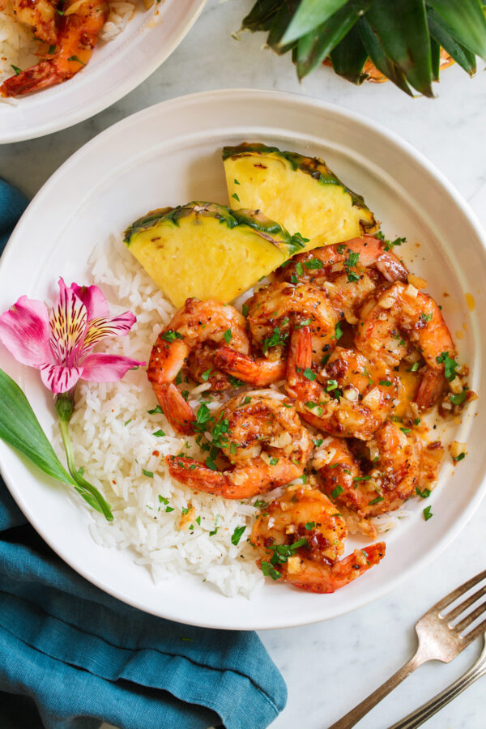

Garlic Shrimp

Delicious Garlic Shrimp
Ingredients
- Raw Shrimp
- Unsalted Butter
- Olive Oil
- Garlic
- All-pupose Flour
- Paprika
- Cayenne Pepper
- Salt
- Pepper
- Lemon juice
- Parsley
Steps
- Using paper towels, dab shrimp dry of excess
moisture on both sides. Place in a bowl.
- Sprinkle with flour, paprika, cayenne pepper, salt,
and pepper as desired. Toss to evenly coat.
- Melt butter with olive oil in a large 12-inch non-stick
skillet.
- Add garlic and saute 30 seconds until nicely fragrant
(but not browning!).
- Add shrimp in an even layer in skillet. Cook on first side
until pinkish color on bottom, about 2 minutes. Then flip and
cook opposide side until just cooked through, about 2 minutes
longer.
- Remove from heat, toss with lemon and garnish with parsley
if using.
- Serve right away topped with extra garlic butter sauce fom pan.